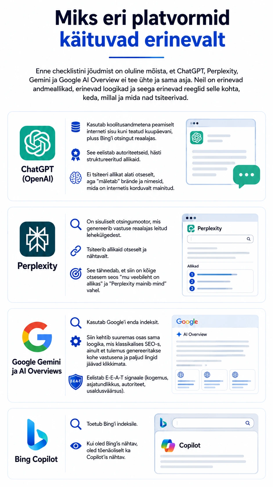
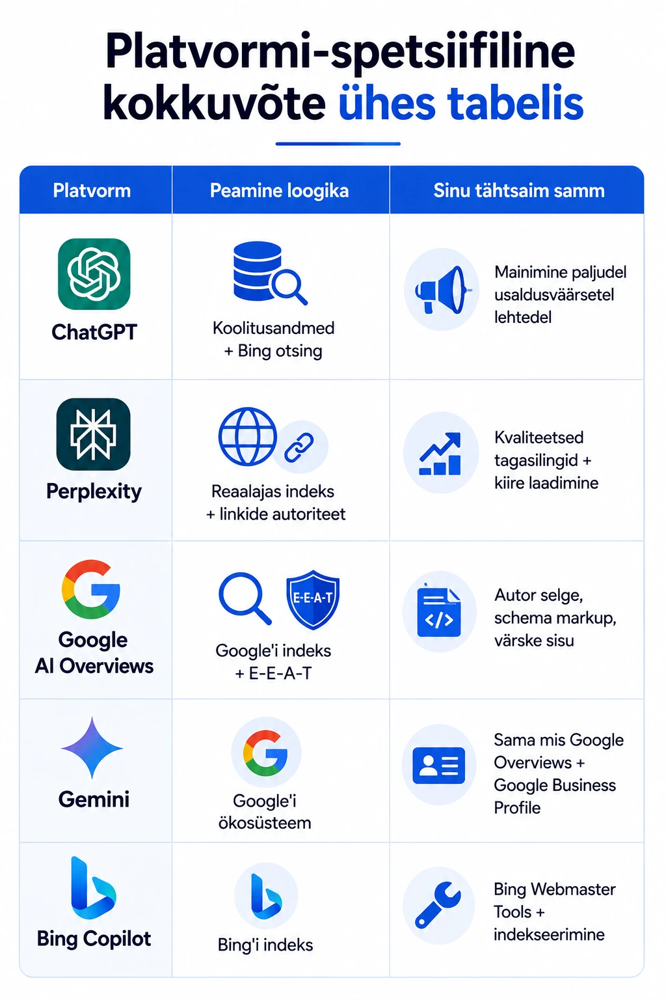

Mul on klient, kes tegi kõike õigesti — SEO, linkide kogumine, sisukad artiklid blogis. Ja seetõttu jõudis see veebileht ka Google'i esilehele. Väga hea. Aga siis küsis ta minult ühe küsimuse, millele mul siis polnud veel head vastust anda: "Miks mind ChatGPT ei maini, kui keegi küsib just selle kohta, millest ma veebilehel räägin?"
See on küsimus, mida kolm aastat tagasi poleks keegi küsinudki. Tänaseks on see muutunud küsimuseks, mis peaks iga turundusjuhi öörahu tugevalt häirima. Selle uue ajastu olemust avasin põhjalikumalt juhendis Mis on AINO? AI Nähtavuse Optimeerimine.
Siin on sulle praktiline checklist — platvormide kaupa, samm-sammult.
Miks eri platvormid käituvad erinevalt
Enne checklistini jõudmist on oluline mõista, et ChatGPT, Perplexity, Gemini ja Google AI Overview ei tee ühte ja sama asja. Neil on erinevad andmeallikad, erinevad loogikad ja seega erinevad reeglid selle kohta, keda, millal ja mida nad tsiteerivad.
- ChatGPT (OpenAI): kasutab koolitusandmetena peamiselt interneti sisu kuni teatud kuupäevani, pluss Bingi otsingut reaalajas. See eelistab autoriteetseid, hästi struktureeritud allikaid. Ei tsiteeri allikat alati otseselt, aga "mäletab" brände ja nimesid, mida on internetis korduvalt mainitud.
- Perplexity: on sisuliselt otsingumootor, mis genereerib vastuse reaalajas leitud lehekülgedest. Tsiteerib allikaid otseselt ja nähtavalt. See tähendab, et siin on kõige otsesem seos "mu veebileht on allikas" ja "Perplexity mainib mind" vahel.
- Google Gemini ja AI Overviews: kasutab Google'i enda indeksit. Siin kehtib suuremas osas sama loogika, mis klassikalises SEO-s, ainult et tulemus genereeritakse kohe vastusena ja paljud lingid jäävad klikkimata. Eelistab E-E-A-T signaale (kogemus, asjatundlikkus, autoriteet, usaldusväärsus).
- Bing Copilot: toetub Bingi indeksile. Kui oled Bingis nähtav, oled tõenäoliselt ka Copilotis nähtav.

Checklist: mis tegelikult töötab
1. Kirjuta küsimusele vastava struktuuriga sisu
AI-d otsivad vastuseid, mitte lihtsalt teemasid. Kui keegi küsib "milline CRM sobib väikeettevõttele", siis AI tahab sulle leida lehe, mis vastab otseselt sellele küsimusele. Mitte lehe, mis räägib CRM-ist üldiselt.
Mida teha:
- Lisa artiklisse selgelt sõnastatud küsimus pealkirjana või alapealkirjana.
- Anna sellele kohe selge, ühte-kahte lausesse mahtuv vastus (see ongi lõik, mida AI tõenäoliselt tsiteerib).
- Seejärel ava teema sügavamalt.
See on nn "answer-first" kirjutamisstiil — pane vastus ette, pikem seletus järgi. Koolides õpetatakse muidugi vastupidist, aga AI eelistab millegipärast seda varianti.
2. Kasuta FAQ (KKK) sektsiooni iga olulise artikli lõpus
Struktureeritud küsimus-vastus formaadis sisu on AI-de lemmik. See on seeditav, selge ja kordab küsimus-vastus struktuuri loomulikult.
Mida teha:
- Lisa iga põhiartikli lõppu 4–8 küsimust koos konkreetsete vastustega.
- Sõnasta küsimused nii, nagu inimesed päriselt küsiksid (mitte "Mis on CRM?" vaid "Kas väikeettevõte vajab üldse CRM-i?").
- Ära pane sinna turunduslikke vastuseid — anna infot.
Perplexity armastab FAQ sektsioone. ChatGPT koolitusfaasis lausa imeb need andmed sisse. Google kasutab neid Featured Snippets'ites ja AI Overviews'ides.
3. Lisa Schema markup. Vähemalt FAQ ja Article tüüp
Schema markup on tehniline kood, mis ütleb otsingumootorite robotitele ja AI-kraapijatele (scrapers) täpselt, mis tüüpi sisuga tegu on. See ei garanteeri tsiteerimist, aga parandab oluliselt sinu võimalusi.
Minimaalne, mida teha:
- FAQPage schema — KKK sektsioonidele.
- Article schema — kõigile blogiartiklitele (koos author, datePublished, dateModified väljadega).
- Organization schema — kodulehele (koos nime, logo, kontakti ja sotsiaalmeedia linkidega).
4. Kasvata autoriteeti - nii inimeste kui masinate jaoks
ChatGPT ei tsiteeri anonüümseid blogisid ja lugusid. Ta tsiteerib nimesid, brände ja väljaandeid, mida ta on "näinud" mitmetes kohtades korraga. See on digitaalne maine, mida ei saa osta. Seda saab ainult üles ehitada ja kasvatada.
Mida teha:
- Kirjuta külalisartikleid väljaannetesse, kus su sihtrühm tihti käib.
- Lase end intervjueerida podcastides, YouTube'i kanalites, artiklites — kõik transkriptid indekseeritakse.
- Taga, et su autorilehel on pärisnimi, foto, lühike bio ja lingid sotsiaalmeediasse.
- Lisa artiklitele autor (pärisnimi, mitte "toimetaja" ega "admin").
Gemini ja Google AI Overviews on E-E-A-T suhtes eriti tundlikud — "kogemus" on Google'i jaoks oluline signaal, et sisu kirjutas keegi, kes päriselt valdkonnast midagi teab.
5. Hangi linke autoriteetsetelt lehtedelt (eriti Perplexity jaoks)
Perplexity töötab otse reaalajas — ta leiab sinu lehe, loeb seda ja otsustab, kas tsiteerida või mitte. Aga ta eelistab alati neid lehti, millel on juba autoriteet. Autoriteet tuleb sissetulevate linkide kvaliteedist ja hulgast.
Mida teha:
- Loo "linkimisväärset" sisu — andmete kokkuvõtted, originaaluuringud, praktilised tööriistad, checklistid (just nagu see artikkel).
- Tee koostöös teiste valdkonna ekspertidega artikleid — nad ise jagavad seda lugu, mis toob linke.
- Lisa end valdkonna ressursside nimekirjadesse ja kataloogidesse.
- Proovi saada tsiteeritud autoriteetsetes meediaartiklites. Sellest, kuidas otsingualgoritmid on pöördumatult muutunud, loe pikemalt siit: SEO on surnud? Ei - aga reeglid on muutunud.
Perplexity jaoks on oluline ka lehe laadimiskiirus ja mobiilisõbralikkus — kui robot ei suuda lehte kiiresti läbi lugeda, jäetakse see vahele. Kiirus iseenesest on oluline kõikide puhul, aga Perplexity hindab seda eriti kõrgelt.
6. Optimeeri ChatGPT jaoks spetsiifiliselt - mainimine, mitte ainult positsioon
ChatGPT ei kasuta reaalajas indeksit (välja arvatud live otsimisel). Ta põhineb koolitusandmetele ja Bingi otsingule. See tähendab, et klassikaline SEO-positsioon pole piisav — oluline on, et su bränd esineks paljudes kohtades tekstiliselt.
Mida teha:
- Taga see, et su ettevõtte nimi, tooted ja teenused on mainitud usaldusväärsetel saitidel (Wikipedia, sinu eriala kataloogid, usaldusväärsed blogid).
- Kirjuta selges ja arusaadavas keeles — keeruline metafoor on igati vahva, aga jääb AI-l sageli tõlkimata.
- Kasuta konkreetseid arve, fakte ja andmeid — need on tsiteerimise magnetid.
- Loo oma brändi "definitsioon" — selge ühelauseline selgitus, mida sa teed ja kellele.
7. Bing'is nähtavus = Copilot'is nähtavus
Microsoft Copilot kasutab Bingi indeksit. Kui su sait pole Bingis indekseeritud, pole sa Copilotis olemas.
Mida teha:
- Registreeru Bing Webmaster Tools'is ja esita sitemap.
- Kontrolli, et Bingil pole su saidi indekseerimisega probleeme.
- Lisa Bingile oma äri ka Bing Places for Business kaudu (eriti oluline lokaalsele ärile).
8. Uuenda sisu regulaarselt - ja anna sellest märku
AI-d, eriti need, mis kasutavad reaalajas andmeid, eelistavad värsket sisu. Google AI Overviews märkab dateModified välja ja eelistab hiljuti uuendatud lehti.
Mida teha:
- Uuenda vanu artikleid vähemalt kord aastas — lisa uusi andmeid, uuenda soovitusi.
- Too välja selgelt "Uuendatud: [kuupäev]".
- Lisa Schema-märgistusse dateModified väli.
Sisu, mis on kirjutatud 2021 ja on peale seda puutumata, ei ole AI-le atraktiivne.
Platvormi-spetsiifiline kokkuvõte ühes tabelis
| Platvorm | Peamine loogika | Sinu tähtsaim samm |
|---|---|---|
| ChatGPT | Koolitusandmed + Bing otsing | Mainimine paljudel usaldusväärsetel lehtedel |
| Perplexity | Reaalajas indeks + linkide autoriteet | Kvaliteetsed tagasilingid + kiire laadimine |
| Google AI Overviews | Google'i indeks + E-E-A-T | Autor selge, Schema markup, värske sisu |
| Gemini | Google'i ökosüsteem | Sama mis Google Overviews + Google Business Profile |
| Bing Copilot | Bingi indeks | Bing Webmaster Tools + indekseerimine |

Mida see kõik tegelikult tähendab
AI otsing ei ole SEO surm. See on SEO edasiarendus — koos mõne uue reegli ja ühe vana reegli tugevnemisega: kirjuta inimestele, mitte robotitele, aga struktureeri nii, et ka robot saaks su mõttest aru.
Nimekirju ja checkliste tsiteeritakse AI poolt rohkem kui vabalt voolavaid esseesid. Fakte tsiteeritakse rohkem kui arvamusi. Konkreetseid vastuseid tsiteeritakse rohkem kui üldistusi.
Ja kõige lõpuks. Mäletad? See klient, kes minult küsis, miks ChatGPT teda ei maini. Me alustasimegi sellest, et kirjutasime ühe põhjaliku vastuse ühele konkreetsele küsimusele, mida tema valdkonnas enim küsitakse. Paari kuuga ilmus ta Perplexity vastustesse. ChatGPT-l läks veidi kauem aega. Ja seal ta oli. Mainitud ChatGPT poolt.
Kas Sinu bränd on AI vastustes olemas?
Ära jäta oma ettevõtte tulevikku juhuse või konkurentide otsustada. Vaatame Sinu veebilehe AI-nähtavusele otsa ja paneme paika reaalse tegevuskava.
Broneeri tasuta konsultatsioon →Kas tahad teada, kuidas AI-nähtavust mõõta ja parandada, kirjuta mulle — selleks on olemas oma protsess, mida jälgida.
Feliks Stavitski on digitaalturunduse konsultant ja AINO termini looja. Ta kirjutab AI nähtavuse optimeerimisest, turundusest ja Eesti e-kaubandusest.